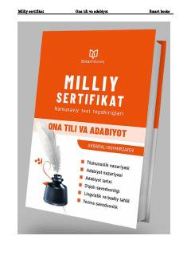

MSOna tili va adabiyot fanidan milliy sertifikat imtihonlari uchun testlar to'plami.
Mazkur to'plam ona tili va adabiyot fanidan yangi namunadagi milliy sertifikat imtihonlariga tayyorgarlik ko'rish uchun mo'ljallangan. Kitobda BMBA standartlariga mos keluvchi 20 xil test variantlari, o'qish va yozish savodxonligi materiallari hamda batafsil javoblar keltirilgan. Qo'llanma abituriyentlar, maktab o'quvchilari va fan o'qituvchilari uchun foydali manba hisoblanadi.